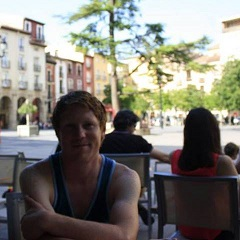
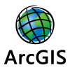
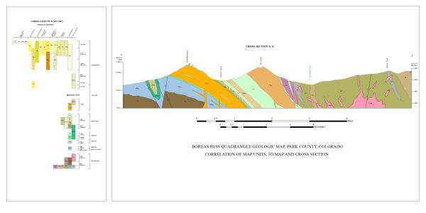
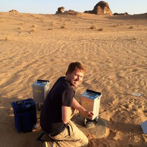
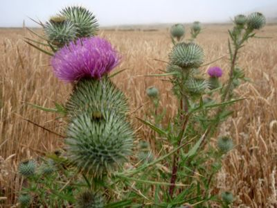

About Me

Hello!
My name is Matt Magee, I am an aspiring software developer currently enrolled in a coding bootcamp at the Tech Academy in Denver, CO. I have previously worked in the Geospatial and Geophysics realms and hope to combine my future software development skills with my experience in GIS and other geospatial software.
My name is Matt Magee, I am an aspiring software developer currently enrolled in a coding bootcamp at the Tech Academy in Denver, CO. I have previously worked in the Geospatial and Geophysics realms and hope to combine my future software development skills with my experience in GIS and other geospatial software.
Technical Skills
Python
Web Development:
HTML
CSS
JavaScript
Databases and SQL
Trimble GPS Pathfinder
Trimble Geomatics Office
Trimble R8, TSC2/3, 5700
QGIS 2.18

ArcGIS 10.X
ArcGIS Online
Git and Git Hub
Visual Studio Code
Microsoft SQL Server
Management Studio
Experience
Pangaea Geospatial - GIS Technician/Analyst

.JPG)
Magee Geophysical Services - Geophysics Technician
American Inovative Minerals - Geologic Technician


Colorado Division of Wildlife - Wildlife Area Maintenence
Contact Me
mmagee66@gmail.com